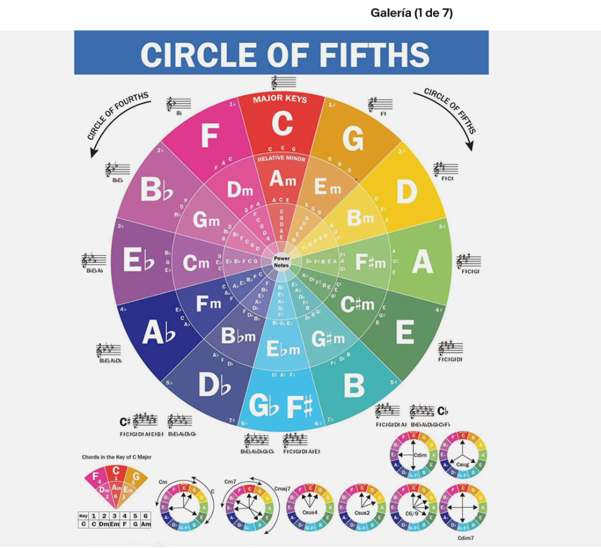

| Tonalidad Mayor | Armadura (Alteraciones) | Relativa Menor | Grados I - IV - V (Pilares Armónicos) |
|---|---|---|---|
| C (Do Mayor) | 0 sostenidos / 0 bemoles (Sin alteración) | Am (La menor) | C · F · G |
| G (Sol Mayor) | 1 Sostenido (Fa#) | Em (Mi menor) | G · C · D |
| D (Re Mayor) | 2 Sostenidos (Fa#, Do#) | Bm (Si menor) | D · G · A |
| A (La Mayor) | 3 Sostenidos (Fa#, Do#, Sol#) | F#m (Fa# menor) | A · D · E |
| E (Mi Mayor) | 4 Sostenidos (Fa#, Do#, Sol#, Re#) | C#m (Do# menor) | E · A · B |
| B (Si Mayor) | 5 Sostenidos (Fa#, Do#, Sol#, Re#, La#) | G#m (Sol# menor) | B · E · F# |
| F# / Gb | 6 Sostenidos / 6 Bemoles | D#m / Ebm | F# · B · C# |
| Db (Re bemol) | 5 Bemoles (Sib, Mib, Lab, Reb, Solb) | Bbm (Sib menor) | Db · Gb · Ab |
| Ab (La bemol) | 4 Bemoles (Sib, Mib, Lab, Reb) | Fm (Fa menor) | Ab · Db · Eb |
| Eb (Mi bemol) | 3 Bemoles (Sib, Mib, Lab) | Cm (Do menor) | Eb · Ab · Bb |
| Bb (Si bemol) | 2 Bemoles (Sib, Mib) | Gm (Sol menor) | Bb · Eb · F |
| F (Fa Mayor) | 1 Bemol (Sib) | Dm (Re menor) | F · Bb · C |